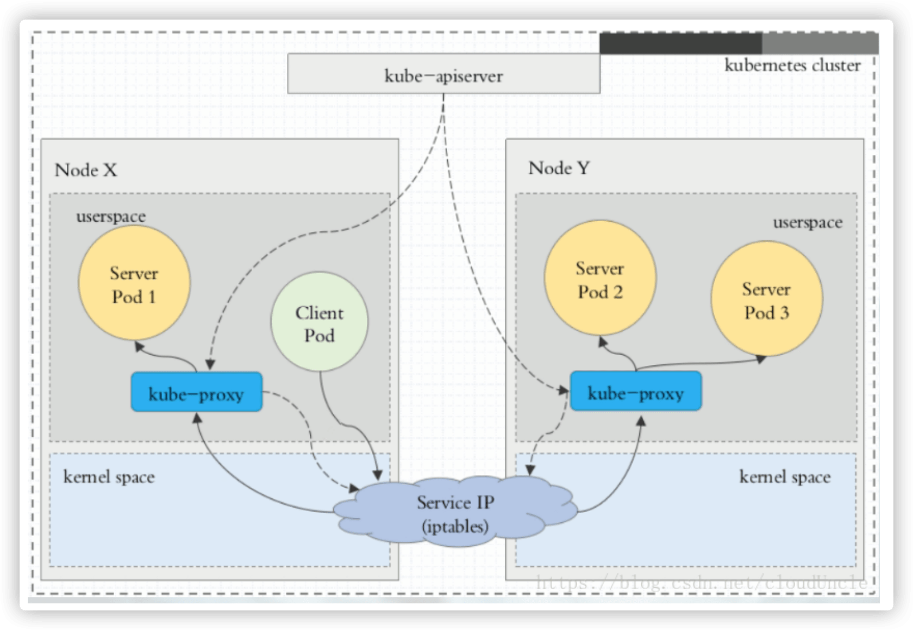

我们一起学习 Kubernetes 的服务发现吧！
Kubernetes 中为了实现服务实例间的负载均衡和不同服务间的服务发现，创造了 Service 对象，同时又为从集群外部访问集群创建了 Ingress 对象。
1. 基本概念
介绍关于 K8S 中 Service 的基本知识和要点！
Pod 是有生命周期的，可以被创建且销毁之后不会再启动。而使用 Deployment 来运行您的应用程序，则它可以动态创建和销毁 Pod。就之前学习的知识，我们都是部署单独的服务，并没有应用实际的示例。比如，我们现在部署一个前后端分离的项目，前端是一组 Pod，后端也是一组 Pod，那么前端如何找出并跟踪要连接的 IP 地址，以便前端可以使用工作量的后端部分？
Kubernetes Service 定义了这样一种抽象：一个 Pod 的逻辑分组，一种可以访问它们的策略 —— 通常称为微服务。这一组 Pod 能够被 Service 访问到，通常是通过 Label Selector 来实现的。
Service 能够提供负载均衡的能力，但是在使用上有以下限制：只提供 4 层负载均衡能力，而没有 7 层功能，但有时我们可能需要更多的匹配规则来转发请求，这点上 4 层负载均衡是不支持的。
2. 类型介绍
介绍关于 K8S 中 Service 的类型和对应用途！
- Service 在 K8S 中有以下四种类型
| 编号 | 类型 | 用途介绍 |
|---|---|---|
| 1 | ClusterIp |
默认类型；自动分配一个仅 Cluster 内部可以访问的虚拟 IP 地址 |
| 2 | NodePort |
在 ClusterIP 基础上为 Service 在每台机器上绑定一个端口，这样就可以通过 :NodePort 来访问该服务 |
| 3 | LoadBalancer |
在 NodePort 的基础上，借助 cloud provider 创建一个外部负载均衡器，并将请求转发到 :NodePort 来访问该服务 |
| 4 | ExternalName |
把集群外部的服务引入到集群内部来，在集群内部直接使用。没有任何类型代理被创建，这只有 Kubernetes1.7 或更高版本的 kube-dns 才支持 |
- VIP(虚拟 IP 地址)和 Service 代理
在 Kubernetes 集群中，每个 Node 运行一个 kube-proxy 进程。kube-proxy 负责为 Service 实现了一种 VIP(虚拟IP)的形式，而不是 ExternalName 的形式。
在 Kubernetes v1.0 版本，代理完全在 userspace。在 Kubernetes v1.1 版本，新增了 iptables 代理，但并不是默认的运行模式。从 Kubernetes v1.2 起，默认就是iptables 代理。在 Kubernetes v1.8.0-beta.0 中，添加了 ipvs 代理。
在 Kubernetes 1.14 版本开始默认使用 ipvs 代理。在 Kubernetes v1.0 版本，Service 是 “4 层”(TCP/UDP over IP)概念。在 Kubernetes v1.1 版本，新增了 Ingress API(beta版)，用来表示 “7 层”(HTTP)服务。
注意，ipvs 模式假定在运行 kube-proxy 之前的节点上都已经安装了 IPVS 内核模块。当 kube-proxy 以 ipvs 代理模式启动时，kube-proxy 将验证节点上是否安装了 IPVS 模块。如果未安装的话，则 kube-proxy 将回退到 iptables 的代理模式。
- 为什么不适用
Round-robin DNS的形式进行负载均衡呢？
熟悉 DNS 的话，都知道 DNS 会在客户端进行缓存。当后端服务发生变动的话，我们是无法得到最新的地址的，从而无法达到负载均衡的作用了。
3. 代理模式
关于 K8S 中 Service 的代理模式的分类！
- [1] 使用 userspace 代理模式

- [2] 使用 iptables 代理模式
- [3] 使用 ipvs 代理模式
这种模式，kube-proxy 会监视 Kubernetes Service 对象和 Endpoints，调用 netlink 接口以相应地创建 ipvs 规则并定期与 Kubernetes Service 对象和 Endpoints 对象同步 ipvs 规则，以确保 ipvs 状态与期望一致。访问服务时，流量将被重定向到其中一个后端 Pod。
与 iptables 类似，ipvs 于 netfilter 的 hook 功能，但使用哈希表作为底层数据结构并在内核空间中工作。这意味着 ipvs 可以更快地重定向流量，并且在同步代理规则时具有更好的性能。此外，ipvs 为负载均衡算法提供了更多选项，例如：
| 编号 | 类型 | 用途介绍 |
|---|---|---|
| 1 | rr |
轮询调度 |
| 2 | lc |
最小连接数 |
| 3 | dh |
目标哈希 |
| 4 | sh |
源哈希 |
| 5 | sed |
最短期望延迟 |
| 6 | nq |
不排队调度 |
# 启动服务
$ kubectl create -f myapp-deploy.yaml
$ kubectl create -f myapp-service.yaml
# 查看SVC服务
$ ipvsadm -Ln
IP Virtual Server version 1.2.1 (size=4096)
Prot LocalAddress:Port Scheduler Flags
-> RemoteAddress:Port Forward Weight ActiveConn InActConn
TCP 10.96.0.1:443 rr
-> 192.168.66.10:6443 Masq 1 0 0
# 查看对应的IPVS防火墙规则
$ kubectl get svc -n default
NAME TYPE CLUSTER-IP EXTERNAL-IP PORT(S) AGE
kubernetes ClusterIP 10.96.0.1 <none> 443/TCP 125d
4. ClusterIP
详细介绍 IPService 的 Cluster 类型！
ClusterIP 主要在每个 node 节点使用 ipvs/iptables，将发向 ClusterIP 对应端口的数据，转发到 kube-proxy 中。然后 kube-proxy 自己内部实现有负载均衡的方法，并可以查询到这个 Service 下对应 pod 的地址和端口，进而把数据转发给对应的 pod 的地址和端口。
为了实现图上的功能，主要需要以下几个组件的协同工作：
apiserver用户通过kubectl命令向apiserver发送创建service的命令，apiserver接收到请求后将数据存储到etcd中。kube-proxy在kubernetes的每个节点中都有一个叫做kube-porxy的进程，这个进程负责感知service和pod的变化，并将变化的信息写入本地的ipvs/iptables规则中。ipvs/iptables使用NAT等技术将VirtualIP的流量转至endpoint中。
- 对应配置文件，如下所示：
# myapp-deploy.yaml
apiVersion: apps/v1
kind: Deployment
metadata:
name: myapp-deploy
namespace: default
spec:
replicas: 3
selector:
matchLabels:
app: myapp
release: stabel
template:
metadata:
labels:
app: myapp
release: stabel
env: test
spec:
containers:
- name: myapp
image: escape/nginx:v2
imagePullPolicy: IfNotPresent
ports:
- name: http
containerPort: 80
# myapp-service.yaml
apiVersion: apps/v1
kind: Service
metadata:
name: myapp
namespace: default
spec:
type: ClusterIP
selector:
app: myapp
release: stabel
ports:
- name: http
port: 80
targetPort: 80
- 启动服务之后，可以查到对应的防火墙规则和默认的
SVC服务。
# 启动服务
$ kubectl create -f myapp-deploy.yaml
$ kubectl create -f myapp-service.yaml
# 查看SVC服务
$ kubectl get svc -n default
NAME TYPE CLUSTER-IP EXTERNAL-IP PORT(S) AGE
kubernetes ClusterIP 10.96.0.1 <none> 443/TCP 125d
myapp ClusterIP 10.99.10.103 <none> 80/TCP 12s
# 查看POD服务
$ kubectl get pod -n default
NAME READY STATUS RESTARTS AGE IP NODE NOMINATED NODE READINESS GATES
myapp-deploy-5cxxc8c94-4fb9g 1/1 Running 0 18s 10.244.1.66 k8s-node01 <none> <none>
myapp-deploy-ddxx88794-r5qgw 1/1 Running 0 18s 10.244.1.68 k8s-node01 <none> <none>
myapp-deploy-68xxfd677-5q4s2 1/1 Running 0 18s 10.244.1.69 k8s-node01 <none> <none>
# 查看对应的IPVS防火墙规则
$ ipvsadm -Ln
IP Virtual Server version 1.2.1 (size=4096)
Prot LocalAddress:Port Scheduler Flags
-> RemoteAddress:Port Forward Weight ActiveConn InActConn
TCP 10.99.10.103:80 rr
-> 10.244.1.66:80 Masq 1 0 0
-> 10.244.1.68:80 Masq 1 0 0
-> 10.244.1.69:80 Masq 1 0 0
5. Headless
详细介绍 IPService 的 Headless 类型！
有时不需要或不想要负载均衡，以及单独的 Service IP。遇到这种情况，可以通过指定 Cluster IP(spec.clusterIP) 的值为 “None” 来创建 Headless Service。这类 Service 并不会分配 Cluster IP，kube-proxy 不会处理它们，而且平台也不会为它们进行负载均衡和路由。
- 对应配置文件，如下所示：
# myapp-svc-headless.yaml
apiVersion: v1
kind: Service
metadata:
name: myapp-headless
namespace: default
spec:
selector:
app: myapp
clusterIP: "None"
ports:
- port: 80
targetPort: 80
- 启动服务之后，可以查到对应的防火墙规则和默认的
SVC服务。
# 启动服务
$ kubectl create -f myapp-svc-headless.yaml
# 查看SVC服务
$ kubectl get svc -n default
NAME TYPE CLUSTER-IP EXTERNAL-IP PORT(S) AGE
kubernetes ClusterIP 10.96.0.1 <none> 443/TCP 125d
myapp-headless ClusterIP none <none> 80/TCP 19m
# 查找K8S上面的DNS服务对应IP地址(任意一个即可)
$ kubectl get pod -n kube-system -o wide
NAME READY STATUS RESTARTS AGE IP NODE NOMINATED NODE READINESS GATES
coredns-12xxcxc5a-4129z 1/1 Running 3 23h 10.244.0.7 k8s-master01 <none> <none>
# 查找对应无头服务的SVC解析的A记录
$ dig -t A myapp-headless.default.svc.cluster.local. @10.244.0.7
;; ANSWER SECTION:
myapp-headless.default.svc.cluster.local. 30 IN A 10.244.1.66
myapp-headless.default.svc.cluster.local. 30 IN A 10.244.1.68
myapp-headless.default.svc.cluster.local. 30 IN A 10.244.1.69
6. NodePort
详细介绍 IPService 的 NodePort 类型！
nodePort 的原理在于在 node 上开了一个端口，将向该端口的流量导入到 kube-proxy，然后由 kube-proxy 进一步到给对应的 pod。
- 对应配置文件，如下所示：
# myapp-svc-nodeport.yaml
apiVersion: v1
kind: Service
metadata:
name: myapp
namespace: default
spec:
type: NodePort
selector:
app: myapp
release: stabel
ports:
- name: http
port: 80
targetPort: 80
- 启动服务之后，可以查到对应的防火墙规则和默认的
SVC服务。
# 启动服务
$ kubectl create -f myapp-svc-nodeport.yaml
# 查看SVC服务
$ kubectl get svc -n default
NAME TYPE CLUSTER-IP EXTERNAL-IP PORT(S) AGE
kubernetes ClusterIP 10.96.0.1 <none> 443/TCP 125d
myapp NodePort 10.99.10.103 <none> 80:30715/TCP 1m
myapp-headless ClusterIP none <none> 80/TCP 19m
# 通过Node的服务器地址访问
$ curl -I http://192.168.66.10:30715
$ curl -I http://192.168.66.20:30715
$ curl -I http://192.168.66.21:30715
# 查询流程(在Node01上面查询的结果)
$ ipvsadm -Ln
IP Virtual Server version 1.2.1 (size=4096)
Prot LocalAddress:Port Scheduler Flags
-> RemoteAddress:Port Forward Weight ActiveConn InActConn
TCP 192.168.66.20:30715 rr
-> 10.244.1.66:80 Masq 1 0 0
-> 10.244.1.68:80 Masq 1 0 0
-> 10.244.1.69:80 Masq 1 0 0
# 查询流程(在Node02上面查询的结果)
$ ipvsadm -Ln
IP Virtual Server version 1.2.1 (size=4096)
Prot LocalAddress:Port Scheduler Flags
-> RemoteAddress:Port Forward Weight ActiveConn InActConn
TCP 192.168.66.21:30715 rr
-> 10.244.1.66:80 Masq 1 0 0
-> 10.244.1.68:80 Masq 1 0 0
-> 10.244.1.69:80 Masq 1 0 0
7. LoadBalancer
详细介绍 IPService 的 LoadBalancer 类型！
loadBalancer 和 nodePort 其实是同一种方式。区别在于 loadBalancer 比 nodePort 多了一步，就是可以调用 cloud provider 去创建 LB 来向节点导流。

8. ExternalName
详细介绍 IPService 的 ExternalName 类型！
这种类型的 Service 通过返回 CNAME 和它的值，可以将服务映射到 externalName 字段的内容，例如：hub.escapelife.site。ExternalName Service是 Service 的特例，它没有 selector，也没有定义任何的端口和 Endpoint。相反的，对于运行在集群外部的服务，它通过返回该外部服务的别名这种方式来提供服务。
当查询主机 my-service.defalut.svc.cluster.local 时，集群的 DNS 服务将返回一个值 hub.escapelife.site 的 CNAME 记录。访问这个服务的工作方式和其他的相同，唯一不同的是重定向发生在 DNS 层，而且不会进行代理或转发。
- 对应配置文件，如下所示：
# myapp-svc-externalname.yaml
# SVC_NAME.NAMESPACE.svc.cluster.local
kind: Service
apiVersion: v1
metadata:
name: my-service-1
namespace: default
spec:
type: ExternalName
externalName: hub.escapelife.site
- 启动服务之后，可以查到对应的防火墙规则和默认的
SVC服务。
# 查看SVC服务
$ kubectl get svc -n default
NAME TYPE CLUSTER-IP EXTERNAL-IP PORT(S) AGE
kubernetes ClusterIP 10.96.0.1 <none> 443/TCP 125d
my-service-1 ExternalName <none> hub.escapelife.site <none> 3m
myapp NodePort 10.99.10.103 <none> 80:30715/TCP 24m
myapp-headless ClusterIP none <none> 80/TCP 45m
# 查找对应无头服务的SVC解析的A记录
$ dig -t A my-service-1.default.svc.cluster.local. @10.244.0.7
;; ANSWER SECTION:
my-service-1.default.svc.cluster.local. 30 IN CNAME hub.escapelife.site